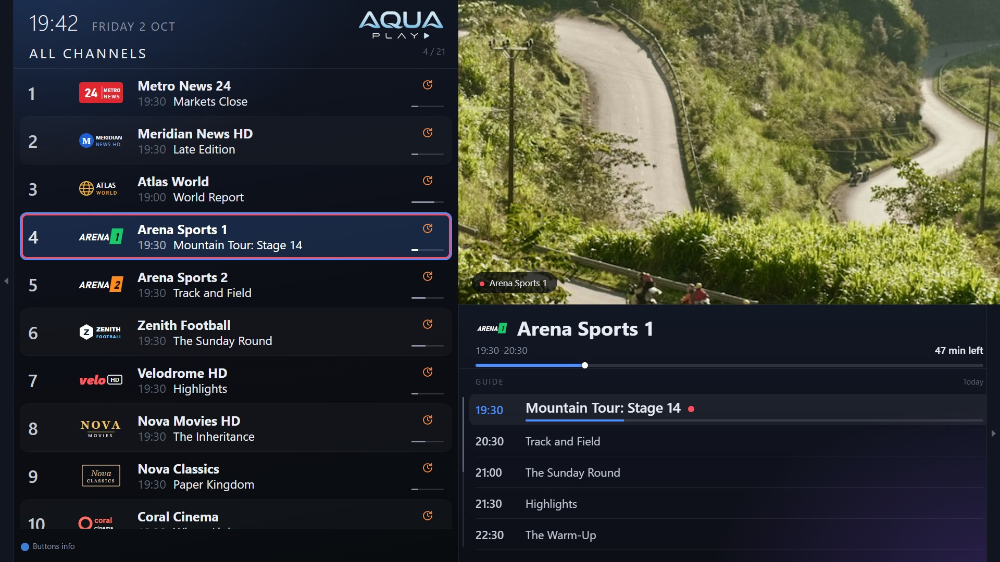

AquaPlay IPTV for Samsung TVs
A lightweight IPTV player for Samsung Smart TVs · free, with everything included

AquaPlay is free on Samsung TVs. It installs with Apps2Samsung, a free tool that puts apps on a Samsung TV from your computer. It works with Samsung Smart TVs from 2018 onwards (Tizen 4.0 or later).
What it does
- M3U playlists and Xtream Codes accounts, several at once
- Set up from your phone: scan a code on the TV and type the details on your phone
- Send playlists and settings to another TV, and back up to your phone
- Groups, favourites, recently watched, and the option to hide groups
- A full programme guide, the schedule beside the picture, and a TV Catalogue over several days
- Programme reminders, and search across channels and programmes
- Catch-up where your provider has it: replay, start over, and rewind live TV
- Movies & Series on a screen of their own
- Your own channel numbers and remote buttons
- Audio and subtitle tracks, picture size, sleep timer
- Profiles, each with their own favourites and history
- Aqua, OLED and Custom themes, three text sizes, ten languages
- Parental PIN and channel locks
- No advertisements, no tracking, no account
AquaPlay is a player only: it comes with no channels or content. You need a playlist from your own provider.
Install it
You need the TV and a computer (Windows, macOS or Linux) on the same network.
- Turn on Developer Mode on the TV. Open Apps, then press 1 2 3 4 5 on the remote (or on the on-screen number pad). Switch Developer mode on, type your computer's IP address, choose OK, and restart the TV: hold the power button until it switches off and on again.
- Get Apps2Samsung on your computer, from github.com/Apps2Samsung/Apps2Samsung, and open it. It finds your TV.
- Download AquaPlay, the
.wgtfile from the latest release. - Install it: in Apps2Samsung, choose your TV, choose to install your own package, and pick the AquaPlay file. The first time, Apps2Samsung may ask you to sign in to a Samsung account, to make the certificate your TV needs.
- Open AquaPlay from the TV's Apps, and add your playlist, from the remote or from your phone.
Updating
Download the new .wgt and install it the same way, from the same computer. It replaces the old one and keeps your playlists and settings. From version 1.0.40, AquaPlay tells you itself when a new version is out, with a code that opens this page.
A copy installed from a different computer was signed with a different certificate, and the TV will not install over it. Back up to your phone first (AquaPlay's Settings), then delete AquaPlay on the TV (Apps, then the settings gear) and install again.
Support AquaPlay
AquaPlay is free on Samsung TVs. If you enjoy it, you can say thank you with a donation on Ko-fi. In the app, it is in Settings, under Support AquaPlay.
Also on Android TV
AquaPlay is on Google Play for Android TV and Google TV, with multi-view and recording too.
News
New versions, and what is coming next, are posted on X: follow @AquaPlayIPTV.
Questions and problems
Open an issue on GitHub, or write to devdolev@gmail.com. The privacy policy says what AquaPlay keeps and sends: in short, nothing about you.